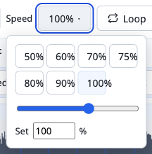

Practice
Practice the hard parts slowly, correctly, and often. Then let the tempo climb.
A paper score cannot slow down, loop a bar, or keep your place. A living score can. This page walks through every practice tool in the app, in the order you would actually use it, and ends with a routine that ties them together.
How you actually improve here
Start here if you are deciding whether this fits how you practice.
OpenVoicing is built around a simple idea from the practice room: you get better at a piece by playing the hard parts slowly, correctly, and often, then speeding them up only once they are clean. A paper score cannot do any of that for you. A living score can.
When you open the app, a demo piece loads right away (Bach's Invention No. 8, with a real recording already synced to the notation), so you can try every technique on this page without importing anything first. Press Play, or tap the spacebar, and the notation highlights the note that is sounding and scrolls to follow it.
Everything here lives in Practice mode
Up in the top-right of the app there is a mode toggle with three settings:
- Listen is a clean player for just viewing and playing a piece, with the practice controls tucked away.
- Practice reveals the tools you reach for when learning: tempo, looping, the Speed Trainer, count-in, the metronome, and recording sync.
- Edit is the full notation editor, for when you want to change the music itself.
So the first move, always, is to switch the toggle to Practice. Nothing you do needs saving. Your speed, your loops, your synced recording, and your place in the piece autosave to your browser, and the header confirms it with "All changes saved." Close the tab, come back tomorrow, and you are where you left off.
The rest of this page walks through each tool in the order you would actually use it: slow the passage down, loop the hard bars, ramp the tempo back up, add a count-in and a click, and play against a real performance. At the end there is a suggested weekly routine that ties them together.
Getting going in four steps
- Open the app; the Bach Invention No. 8 demo loads automatically.
- Set the top-right mode toggle to Practice.
- Press Play (or the spacebar) to hear it and watch the notation follow.
- Trust that your settings and place autosave to the browser as you work.
Slow it down without changing the pitch
For a passage that is too fast to play cleanly.
The single most useful thing you can do with a hard passage is play it slower than you think you need to. OpenVoicing lets you drop the tempo anywhere from 25% up to 150% of the written speed, in 5% steps, and the pitch never moves. Half speed sounds like the same piece played by a patient teacher, not a piece dragged down into a growl.
This works two ways, and both keep the pitch correct:
- The notation played by the app (the built-in "Notes" sound) slows down cleanly.
- A real recording you have synced to the score slows down the same way, so you can hear an actual performer take the passage at 60% without the pitch sagging.
How to set the tempo
- In Practice mode, find the Speed control in the transport bar. It shows the current tempo as a percentage, for example "100%."
- Click the percentage to open a small panel with one-tap presets (50, 60, 70, 75, 80, 90, 100), a slider, and a box to type an exact number and press Enter.
- Or nudge it without opening anything: hover the control and scroll, or focus it and use the arrow keys. Each nudge is 5%. Hold Shift while you scroll or arrow to jump in bigger 25% steps, so going from 100% down to 50% is two presses, not ten.
- For an instant drop, press
hto toggle half speed on and off. It is the fastest way to check a passage slowly and then hear it back up to tempo.

| Setting | Value |
|---|---|
| Range | 25% to 150% of the written tempo |
| Fine step | 5% (scroll or arrow keys) |
| Coarse step | 25% (hold Shift while scrolling or arrowing) |
| Presets | 50, 60, 70, 75, 80, 90, 100 |
| Exact entry | Type a number and press Enter |
| h | Toggle half speed |
Tips
- Pick a tempo where you can play the passage with zero mistakes and no tension, even if that feels absurdly slow. Slow-and-correct beats fast-and-sloppy every time, because you are practicing the version of the passage you will actually keep.
- If 60% still trips you up, go to 50% or 40%. There is no prize for the fastest wrong notes.
- Because pitch is preserved, you can tune to the slow playback, match intonation, and hear voice-leading that flies past at full speed.
- Use the exact-number box when a teacher gives you a target like "practice this at 72% this week."
Loop the hardest bars, and save them for tomorrow
For the one or two bars that keep falling apart.
You do not practice a piece. You practice the three bars that keep falling apart. OpenVoicing makes it fast to isolate a passage, repeat it endlessly, and come back to it later without hunting for it again.
Set a loop
There are three ways; use whichever is quickest for the moment:
- Drag across the notes you want to repeat, right on the score. The selected bars become the loop.
- Click the Loop button and set the from and to bar numbers with the steppers, handy when you know exactly which bars you mean ("bars 17 to 20").
- On the fly, during playback, press
[to set the loop start at the note that is sounding and]to set the loop end. This is the fastest way to lasso the exact spot that just went wrong.
Once a loop is set, playback repeats it until you turn Loop off. Slow it down, run the Speed Trainer on it, or add a click; the loop is the unit everything else operates on.
Put a breath between repeats
Repeating a passage with no gap can train you to rush the downbeat. In the recording tools there is a Pause between reps setting that inserts a short silence (with a count-in) between loop repeats, so you get a beat to reset your hands and hear the next start coming. Set it to a bar or two when a passage needs a moment of reset between attempts.
Save the passage so it is one keypress tomorrow
When you find a spot worth drilling regularly, save it:
- With a loop active, click Save loop (in the Loop panel). Give it a name, or accept the default ("Loop 1," "Loop 2").
- Your saved passages appear as a row of buttons. Click one to jump back to that exact loop instantly.
- The first nine saved loops are bound to the number keys 1 through 9, so during a practice session you can bounce between "the trill in bar 12" and "the leap in bar 34" without touching the mouse.
Saved loops autosave with the piece, so the trouble spots you flagged today are still there next time you open it.
The Speed Trainer: let the tempo climb as you succeed
For building a passage back up to tempo methodically.
Slowing down is half the method. The other half is speeding back up gradually, and only when you have earned it. OpenVoicing has a built-in Speed Trainer that does exactly this: you loop a passage, and each time you get through it a set number of times, the trainer bumps the tempo up a notch, all the way to your target. It is the classic "metronome up 5 clicks" drill, automated, so you can keep your eyes on the music and your hands on the instrument.
How to run the Speed Trainer
- First choose the passage you want to drill (see Looping the hardest bars). The trainer always works on a loop.
- In Practice mode, open the Loop panel and turn on the Speed trainer checkbox. Turning it on automatically enables looping, since the tempo can only step up between repeats.
- Set the four numbers:
- Start is the tempo the trainer drops you to when you begin, for example 60%.
- + N% every M loops is how much faster it goes and how often. For example "+5% every 2 loops" means every second time through, it adds five percent.
- up to is the target tempo it climbs toward and then holds, for example 100%.
- Press Play. The trainer immediately sets the tempo to your Start value and begins looping. Every time you complete the set number of repeats, it nudges the tempo up by your step until it reaches the target, then holds there so you can lock the passage in at speed.
The live readout shows where you are, for example "now 70% to 100%," so you always know how much climb is left.
Why practice this way
- Your hands memorize the shape of the passage at a tempo they can handle, then feel it get faster in increments too small to notice. That is how a hard run becomes easy: not one heroic attempt at full speed, but many clean ones that creep upward.
- Because the step is small (start with 5%), you rarely hit a wall. If you do, turn the trainer off, drop back down manually, and clean up the spot before ramping again.
- The trainer works whether you are practicing against the app's own Notes sound or against a synced recording or YouTube video, so you can ramp your tempo against a real performance.
Count-in and metronome: start in time, stay in time
For anyone who rushes, drags, or starts cold.
Two small tools fix a lot of timing problems: a count-in so you enter in tempo instead of guessing the first beat, and a metronome so you have a steady pulse to lock to.
Count-in
A count-in gives you a lead-in before the music starts, the musical equivalent of a conductor's "one, two, ready, play," so your first note lands in time instead of a beat late.
- In Practice mode, tick the Count-in checkbox.
- Choose the length: 1 bar, 2 bars, or 4 bars. Pick based on how much runway you need; two bars is a comfortable default.
- Press Play. You get an audible and on-screen count that matches the meter (it counts the right number of beats per bar for the piece), then the music comes in.
The count-in is especially valuable when looping. With a count-in on, every repeat of a loop gives you that lead-in, so you never scramble to catch a downbeat that arrives with no warning.
Metronome
The metronome adds a click on the beat so you can hear whether you are steady.
- In Practice mode, click the Metronome button (the pendulum icon) to toggle it on.
- Play. The click marks the beats; if your playing drifts against it, you will hear it immediately.
There is a nice extra when you are playing along with a synced real recording: the metronome can click on each bar's downbeat as mapped by the sync, so the click lines up with the actual performance rather than a robotic grid. That lets you feel where a live player pushes and pulls while still having a reference pulse.
Play along with a real recording (or a YouTube video)
For anyone who learns by imitation.
Reading the notes is one thing. Hearing how a real musician phrases them is another. OpenVoicing can line a real performance up with the score so that playback follows the notation bar by bar. You can then slow that real performance down (pitch intact), loop the tricky spot, and play along.
Recordings are ordinary MP3 audio, so they play in Safari, Chrome, and Firefox with nothing to install. The default demo piece already has a recording synced, so you can try all of this immediately.
Attach and sync an audio recording
- In Practice mode, open the Recording & sync panel and choose Add, then Audio file to attach an MP3 of a performance of the same piece.
- Align it to the score in one of two ways:
- Auto sync aligns every bar automatically from the audio. Start here; it does the whole map at once.
- Tap sync lets you tap each bar's downbeat yourself as the recording plays, useful for free or rubato playing where automatic alignment struggles.
- Use the Sound toggle to choose what you hear: Recording (the real performer) or Notes (the app playing the written notation). Switch between them to compare your reading of the score with how it is actually played.
- Above the waveform you will see colored bar numbers, the sync-confidence flags: blue means that bar looks well aligned, amber means give it a glance, red means it probably needs a nudge. Drag a marker to fix a spot. A real tempo change or a held fermata can legitimately show amber or red, so trust your ears, not just the color.
| Flag | Meaning |
|---|---|
| Blue | The bar looks well aligned; leave it. |
| Amber | Give it a glance; it may be fine or may need a nudge. |
| Red | Probably needs a nudge; drag the marker into place. |
Once synced, slowing the recording down keeps the performer in the correct key, and looping works on the real audio, so you can take a phrase at 60% from an actual recording and play right along with it.
Or sync to a YouTube video
Instead of an audio file you can sync the score to a YouTube video, for instance a lesson or a performance, and the notation follows the video as it plays.
- In the Recording & sync panel, choose Add, then YouTube video, and paste the video link (or its id). The video appears above the score, and the Sound toggle now offers Video or Notes.
- Sync it with tap sync: press play, then tap each bar's downbeat as it goes by.
- Play as usual. The cursor follows the video, Follow keeps the score in view, and looping works. One difference: speed snaps to YouTube's own steps (0.25, 0.5, and so on) rather than 5% increments.
- If you want a waveform, finer speed control, and one-shot Auto sync, choose Add, then Audio for waveform and auto-sync and attach an audio file of the same performance. Auto sync then aligns every bar at once and you can drag markers to fine-tune, while playback stays on the video.
Two things to know about YouTube
- The video is embedded, never downloaded (through YouTube's official player), so it needs an internet connection to play.
- A piece that references a YouTube video is marked external: it is not a fully self-contained file, and playback breaks if the video is later taken down. Audio-only pieces stay fully self-contained and work offline.
Use Follow to keep your place on the page
For anyone reading and playing at the same time.
When you are reading and playing at the same time, losing your place is the fastest way to break down. Follow keeps the score scrolled to the exact spot that is sounding, so the notation comes to you instead of you chasing it.
How it works
- Follow is on by default. As the piece plays, the view scrolls to keep the currently playing bar in sight, whether the sound is the app's own Notes, a synced audio recording, or a YouTube video.
- The current note is highlighted, so even on a busy page your eye lands on the right beat.
- If you scroll the score by hand (to peek ahead at what is coming, or check a spot you just played), Follow politely steps aside and lets you look around. A few seconds after you stop scrolling, it quietly resumes and snaps back to the playing bar. You are never fighting the page for control.
- You can turn Follow off entirely if you would rather the page stay put, for example when you are studying a single system and do not want it to move at all.
Why it matters for practice
- On a tablet or laptop on a music stand, Follow turns the app into a page-turner that never turns too early or too late. Your hands stay on the instrument.
- When you loop a passage, Follow keeps that passage centered every time it comes around, so your eyes are always in the right place for the repeat.
- Because it yields when you scroll, you can glance ahead at the next line without stopping playback, then let it pull you back to where the music actually is.
A suggested practice routine
The tools tied together into a method, for one session or a week.
Here is a routine that ties the tools together. It works for a single practice session and scales to a week of home practice. Adjust the tempos to your level; the structure is what matters.
A single session (about 25 to 40 minutes)
- Warm up with a run-through (5 minutes). Set the tempo somewhere comfortable, turn Follow on, and play the whole piece (or the section you are working on) against the app's Notes sound. The goal is not perfection; it is to find where you break down. Mentally flag the two or three worst spots.
- Isolate and loop the worst spot (10 to 15 minutes). Press
[and]during playback to lasso the exact bars that fell apart, or drag across them. Save the loop and give it a clear name. Drop the tempo with the Speed control until you can play the passage with zero mistakes and no tension, even if that is 50% or slower. Turn on a count-in (2 bars) and the metronome so every repeat starts in time and stays in time. - Ramp it up with the Speed Trainer (10 minutes). With the loop still active, turn on the Speed Trainer. Set Start at the slow tempo you just found, step +5% every 2 loops, target the piece's real tempo. Play and let it climb. If you hit a wall, turn the trainer off, drop back down, clean the spot, and ramp again.
- Put it back in context (5 minutes). Turn the Speed Trainer and the loop off. Play a little before and after the trouble spot at a moderate tempo so the repaired passage connects to its neighbors. Isolated bars have to be sewn back into the piece.
- Listen to the model (optional, 5 minutes). Switch the Sound toggle to a synced recording or a YouTube performance, slow it to 70%, and shadow the phrasing and dynamics. This is where accuracy turns into musicality.
Across a week
- Day 1: Do the full routine on your hardest passage. Save loops for every trouble spot you find (they persist, so you are building a personal list of what to drill).
- Days 2 to 4: Open the piece, recall each saved loop with the number keys 1 to 9, and run the Speed Trainer on each for a few minutes. Nudge each loop's target tempo up a little from the previous day.
- Day 5: Play the whole piece with Follow on at a tempo just below your target. Note any spot that still wobbles and add it as a new saved loop.
- Day 6: Play along with a synced recording at full or near-full tempo. Focus on matching phrasing, not just notes.
- Day 7: Run-through at target tempo, then rest. Everything autosaved, so your loops and tempos are exactly where you left them for next week.
Habits that make it stick
- Practice slow enough to be perfect, then let the Speed Trainer earn the tempo back. Speed is a byproduct of accuracy, not a goal you chase directly.
- Keep loops short. The real problem is almost always one or two bars.
- Use the count-in every time you loop, so you never train yourself to rush an unprepared downbeat.
- End on a success. Finish each spot at a tempo where you can play it cleanly, so the last thing your hands remember is the passage done right.
For teachers: assigning practice that actually gets done
For private teachers and classroom instructors setting up homework.
OpenVoicing gives you a way to hand a student a piece that already knows how it should be practiced. Because a piece is a single self-contained .ovb file, you can prepare it once and the student opens exactly what you built, with your recording, your sync, and your suggested loops attached.
Prepare a piece for a student
- Open or import the score (MusicXML or Guitar Pro), or start from one you have already built.
- In Practice mode, attach a recording: an MP3 of the piece (yours or a reference performance), or a YouTube video of a lesson or performance. Sync it with Auto sync, then fix any amber or red bars by dragging the markers.
- Save loops for the passages you want the student to drill, and name them for the challenge ("left-hand crossing," "the trill"). These travel with the piece.
- Export a bundle with File, then Export bundle. You get one
.ovbfile that holds the score, the recording, and the sync map. Email it, drop it in a shared folder, or host it anywhere static.
Give practice instructions the tool can execute
Instead of "practice bars 17 to 24 slowly," you can assign something the app will run for the student:
- "Recall the saved loop left-hand crossing (press 3) and run the Speed Trainer from 60% up to 100%, +5% every 2 loops. Do this until you can start it at 80% and finish clean."
- "Play along with the synced recording at 70% with Follow on, matching the phrasing in bars 30 to 40."
- "Turn on count-in and the metronome and play the whole B section at 85% with no stops."
Because the tempos are exact percentages, you and the student are talking about the same numbers, and the student cannot lose the assignment: the loops are saved in the piece and everything autosaves to their browser.
Why this beats a PDF and a link to a video
- The recording is locked to the notation, so the student is never guessing which bar the performer is on. The cursor and Follow show it.
- Slowing your reference recording down keeps it in the right key, so a beginner can hear a hard passage taken slowly and correctly.
- The student cannot accidentally practice the wrong tempo relationship: pitch and speed are independent, always.
- There is no account and no sign-up for the student. They open the file (or an embedded player you put on your studio site) and start.
Publish it on your own studio site
If you keep a website for your studio, you can embed any piece directly on a lesson page: host the .ovb bundle, drop in the embed script, and point a <div> at it. Students get the same interactive, practice-ready player without leaving your site, and you keep the files. The full embed reference is in the Publish guide.
.ovb per assigned piece, each with your recording, sync, and named loops. Over a term you accumulate a set of ready-to-practice pieces you can reuse for every student who reaches that level.
Keep going